Sistema web de gestão de coworking: espaços, reservas, planos de assinatura, visitantes, eventos, pagamentos e relatórios de ocupação.
O espaço de coworking "OpenOffice" aluga salas, mesas e espaços para eventos corporativos. Sem um sistema, o controle de reservas fica sujeito a conflitos de horário, cobranças erradas e falta de controle sobre quem entra no prédio. O OpenOffice Coworking centraliza essas operações numa aplicação web que roda no navegador.
O sistema controla as reservas sem sobreposição e dentro da capacidade de cada espaço. Também gerencia membros, planos de assinatura e visitantes, organiza eventos com prioridade para membros VIP, registra pagamentos e gera relatórios de ocupação e financeiros.
As duas pontas se encontram nos dados. A reserva de um membro aparece na agenda e no relatório de ocupação. O pagamento entra no relatório financeiro. Um evento criado pelo administrador bloqueia o espaço na agenda de todos. O plano do membro define o que ele pode fazer: o plano VIP libera salas privadas, descontos, pré-venda de eventos e reservas com 30 dias de antecedência.
| Requisito do enunciado | Como foi implementado |
|---|---|
| Cadastro de membros, visitantes e tipos de espaços | Cadastro público de membros (com validação de CPF e e-mail únicos), cadastro e edição pelo administrador, desativação e remoção. Visitantes são registrados pelo documento e reaproveitados nas próximas visitas. Quatro tipos de espaço com preço, capacidade e situação (ativo/desativado). |
| Controle de reservas | Fluxo em 2 passos (dados → resumo com valor e pagamento). Valida sobreposição, capacidade, antecedência pelo plano, horário de funcionamento (08h–22h, blocos de 30 min), acesso VIP e plano ativo. Em caso de conflito, sugere o horário livre mais próximo. Agenda visual por sala e hora. |
| Cancelamento com multa | Prévia antes de confirmar mostrando multa e reembolso. Com menos de 24h, 50% do valor fica retido e é registrado como cobrança do tipo "Multa". O administrador pode cancelar sem multa, e o membro é avisado. |
| Planos e benefícios VIP | Quatro planos com preço e duração. A renovação começa no dia seguinte ao fim do plano atual. Os benefícios VIP são aplicados automaticamente: salas privadas, 20% em sala de reunião e auditório, 15% em eventos especiais, pré-venda e 30 dias de antecedência. |
| Registro e autorização de visitantes | Apenas membros com plano ativo autorizam visitantes, com no máximo 3 ao mesmo tempo. O mesmo visitante não entra duas vezes sem registrar a saída. Entradas, saídas e histórico ficam disponíveis para o membro e para a recepção. |
| Eventos e workshops | Criados pelo administrador, reservam o espaço (sem conflito) e limitam as vagas à capacidade. Inscrições abrem primeiro para VIP por um número configurável de dias. Evento lotado tem lista de espera: quando alguém cancela, o primeiro da fila ganha a vaga e recebe um aviso para pagar. |
| Sistema de pagamento | PIX, cartão de crédito (validação de Luhn, validade, CVV e até 6 parcelas) e boleto, todos simulados. Cobranças pendentes podem ser pagas depois. Histórico financeiro com comprovantes. Só os 4 últimos dígitos do cartão são gravados. |
| Relatórios de uso | Ocupação por sala, ocupação por horário e sala (mapa de calor), financeiro por origem da receita, visitas e eventos. Período configurável, gráfico (Chart.js), resumo e exportação para PDF (iText) e CSV. |
| Persistência em arquivos | Um arquivo JSON por entidade na pasta data/, gravação atômica, backup automático a cada inicialização e log de auditoria em TXT. |
| Desafio: Google Drive | Envio e restauração dos arquivos de dados numa pasta do Google Drive via OAuth (escopo drive.file), configurado por .env. |
| Funcionalidade | Motivo |
|---|---|
| Pagamento real (gateway de cartão, PIX ou boleto) | Exigiria contrato com uma empresa de pagamentos e credenciais reais. O enunciado pede um "sistema de pagamento" e o foco da disciplina é POO, por isso os pagamentos são simulados, mas com validação e comprovante. |
| Envio de e-mails (confirmação de reserva, aviso de vaga) | Precisaria de um servidor SMTP e credenciais. Os avisos aparecem no painel do membro. |
| Prazo para pagar a vaga liberada na lista de espera | A vaga fica reservada até o pagamento. Um prazo de expiração exigiria uma rotina agendada e ficou como melhoria futura. |
| Proteção CSRF e HTTPS | O sistema foi feito para rodar localmente. Usar o Spring Security completo resolveria isso, mas aumentaria a complexidade sem relação com POO. |
| Banco de dados | O enunciado pede persistência em arquivos (CSV, JSON ou TXT). Como o código depende da interface Repositorio<T>, trocar por um banco não mudaria as regras de negócio. |
Revisar: se a equipe deixou de fazer algo combinado no início (ou não chegou a testar o Google Drive com credenciais reais), registre aqui com o motivo.
O projeto usa Spring Boot apenas para a parte web (servidor, páginas e formulários). Todas as regras de negócio ficam em classes Java comuns, separadas em camadas:
SalaPrivada sabe que é exclusiva de VIP, o TipoPlano sabe o próprio preço e antecedência, e a Reserva sabe se sobrepõe outro horário.Clock. Isso permitiu testar regras de data (24h, 7/30 dias, vencimento de plano) com uma data fixa.| Princípio | Onde foi aplicado | Por que ajudou |
|---|---|---|
| Abstração | Pessoa, Usuario, Espaco, Pagamento, Entidade e RepositorioJson<T> são abstratas. | Representam conceitos que só existem nas formas concretas. Não existe um "espaço genérico", e o serviço de reservas trabalha com Espaco sem depender do tipo. |
| Herança | Pessoa → Usuario → Membro/Administrador; Pessoa → Visitante; Espaco → EstacaoTrabalho/SalaReuniao/SalaPrivada/Auditorio; Pagamento → PagamentoPix/Cartao/Boleto. | Nome, documento, login, capacidade e valor ficam declarados uma única vez. Um novo tipo de sala exige só uma subclasse pequena. |
| Polimorfismo | getPrecoHora(), percentualDesconto(), validarAcesso(), processar(), getPaginaInicial(), ExportadorRelatorio.exportar(). | O cálculo do preço e as regras de acesso não têm if por tipo: cada subclasse responde do seu jeito. Depois do login, cada perfil vai para a sua página. |
| Encapsulamento | Atributos privados, validação em construtores e setters, listas somente leitura, id definido uma única vez. | Objetos nunca ficam em estado inválido (capacidade 0, e-mail inválido, estação com 2 lugares). Os dados do cartão são transient e não vão para o arquivo. |
| Interfaces | Cobravel, Autenticavel, Repositorio<T>, ExportadorRelatorio. | O FinanceiroService cobra qualquer Cobravel (plano, reserva ou inscrição) sem conhecer as classes concretas. |
Além dos quatro pilares, foram usados dois padrões de projeto. O Template Method aparece em Espaco.calcularValor() e Pagamento.processar(). O Factory Method aparece nos enums TipoEspaco.criar() e FormaPagamento.criarPagamento().
Espaco e a subclasse SalaPrivadaA classe abstrata Espaco concentra a regra de preço de todas as reservas. O método calcularValor é final (o algoritmo não muda), mas usa dois pontos de extensão que as subclasses sobrescrevem: getPrecoHora() e percentualDesconto(). A SalaPrivada sobrescreve validarAcesso() para somar a exigência de plano VIP à regra geral.
@JsonTypeInfo(use = JsonTypeInfo.Id.NAME, property = "tipo") // guarda a subclasse no JSON public abstract class Espaco extends Entidade { private String nome; private int capacidade; public abstract BigDecimal getPrecoHora(); // cada tipo define o seu preço protected int percentualDesconto(boolean membroVip) { // padrão: sem desconto return 0; } public void validarAcesso(Membro membro, LocalDate hoje) { if (!membro.temPlanoAtivo(hoje)) { throw new PlanoInativoException("Você precisa de um plano ativo..."); } } /** Template Method: o cálculo é o mesmo; preço e desconto vêm das subclasses. */ public final Orcamento calcularValor(Duration duracao, boolean membroVip) { BigDecimal horas = BigDecimal.valueOf(duracao.toMinutes()).divide(BigDecimal.valueOf(60), 4, HALF_UP); return Orcamento.de(getPrecoHora().multiply(horas), percentualDesconto(membroVip)); } } public class SalaReuniao extends Espaco { public BigDecimal getPrecoHora() { return new BigDecimal("60.00"); } @Override protected int percentualDesconto(boolean vip) { return vip ? 20 : 0; } } public class SalaPrivada extends Espaco { public BigDecimal getPrecoHora() { return new BigDecimal("80.00"); } @Override public void validarAcesso(Membro membro, LocalDate hoje) { super.validarAcesso(membro, hoje); // mantém a regra geral if (!membro.isVip(hoje)) { throw new AcessoNegadoException("As salas privadas são exclusivas do plano VIP."); } } }
No ReservaService, a validação fica em uma linha: espaco.validarAcesso(membro, hoje). O serviço não precisa saber se a sala é privada, porque o objeto certo responde.
As telas abaixo foram capturadas do sistema em execução, com os dados de demonstração criados na primeira inicialização.
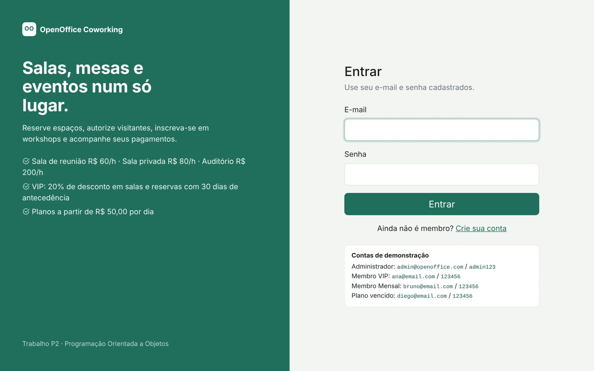
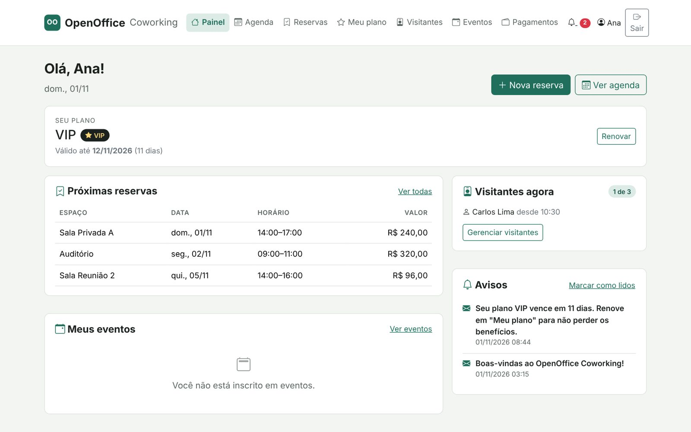
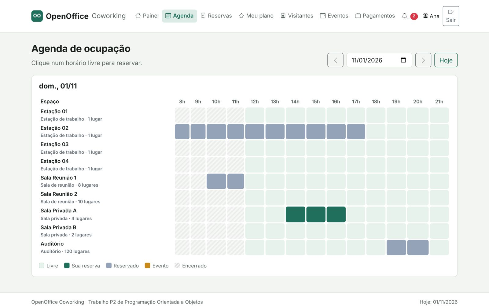
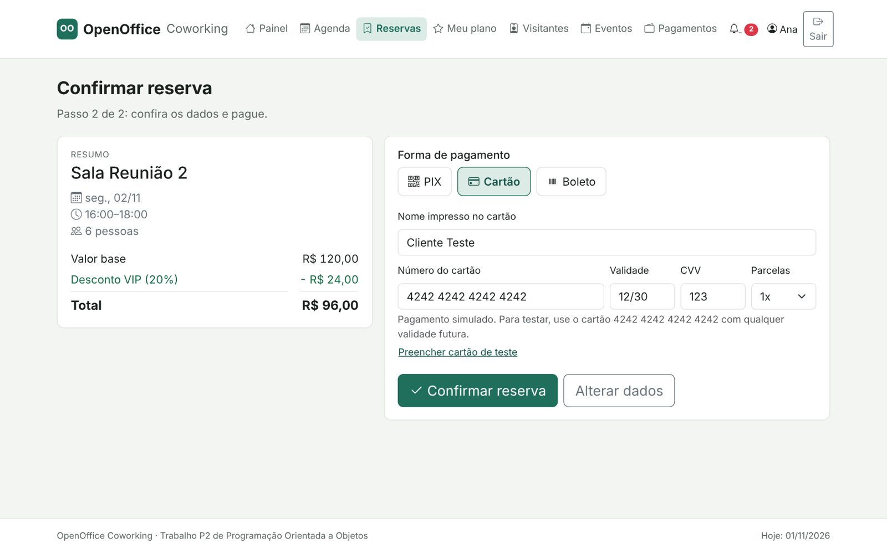
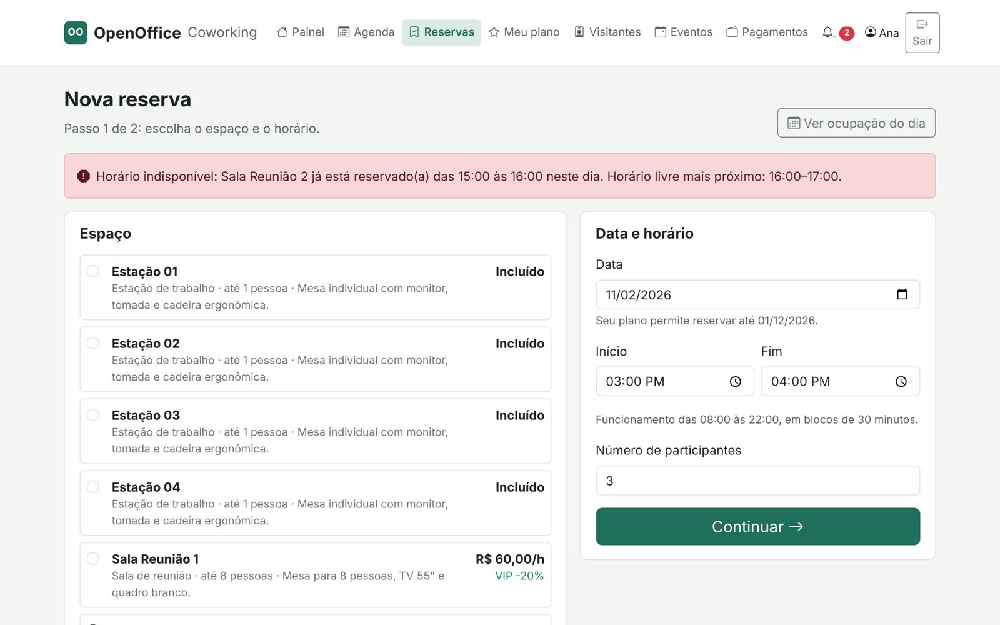
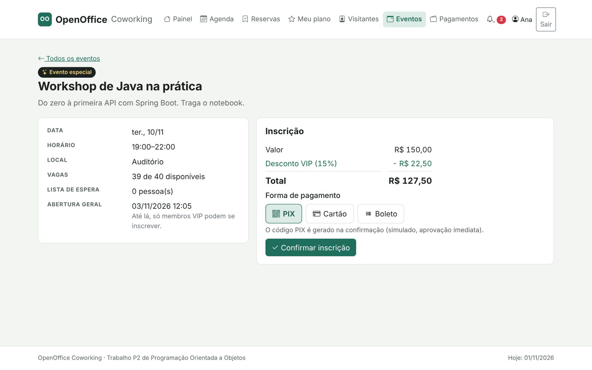
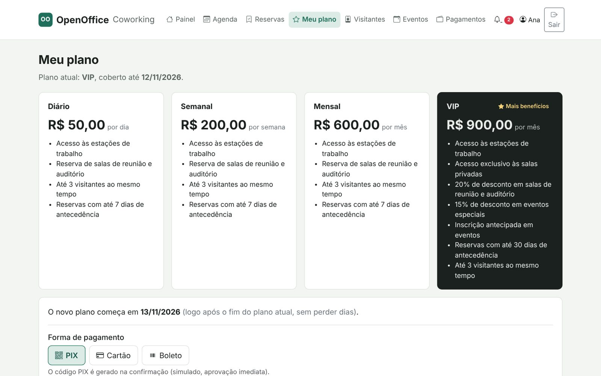
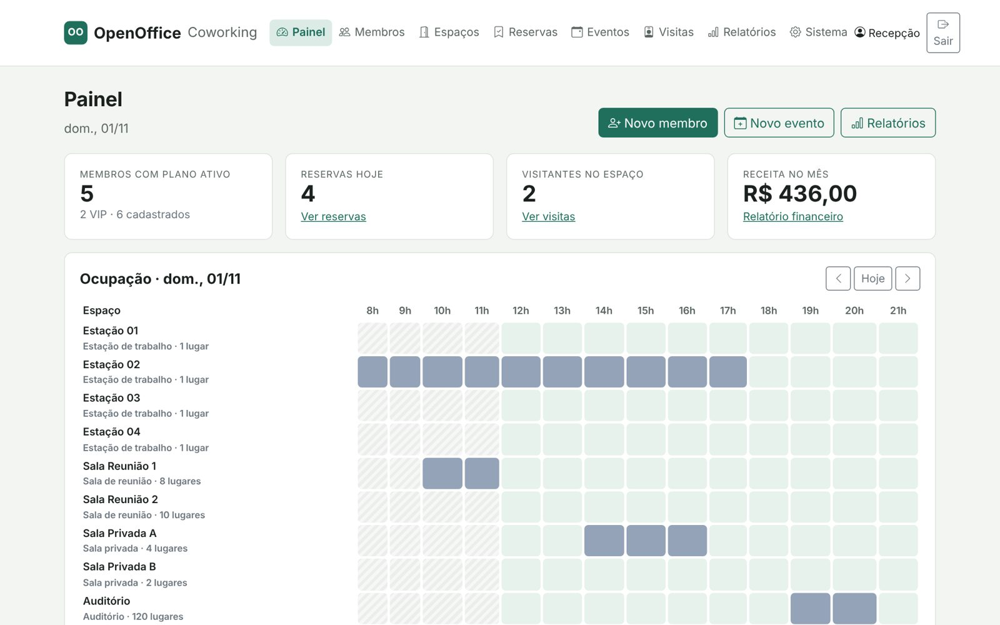
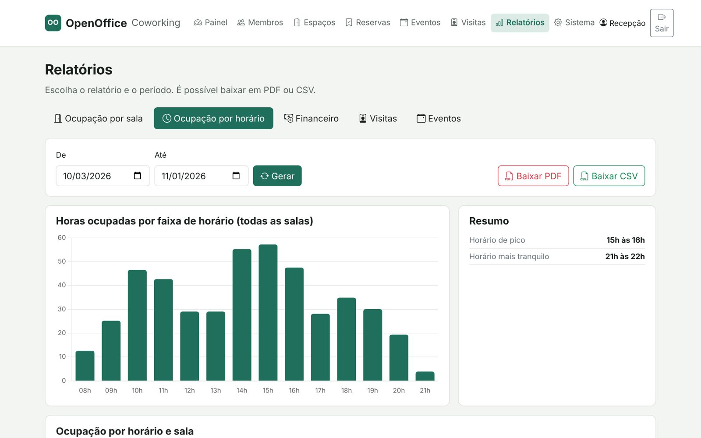
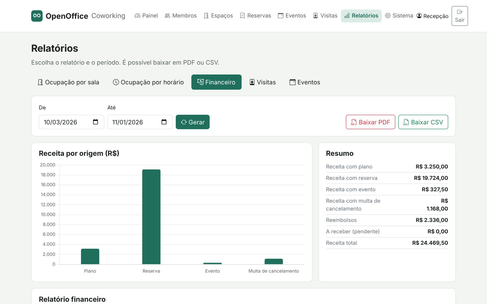
ana@email.com (VIP). Mostrar o painel e a agenda, e reservar uma sala de reunião para ver o desconto de 20%.bruno@email.com (Mensal). Tentar a sala privada (acesso negado), uma data com mais de 7 dias e o evento em pré-venda VIP. Entrar na lista de espera do evento lotado.admin@openoffice.com. Mostrar o painel, criar um evento, gerar relatórios e baixar o PDF.| Situação | Como o sistema reage |
|---|---|
| Campo vazio ou formato inválido | Validação do formulário: o campo fica vermelho com a mensagem em português e os dados digitados são mantidos. |
| Regra de negócio violada | O serviço lança uma exceção específica (ex.: HorarioIndisponivelException). O controller mostra a mensagem na mesma tela, sem perder o que foi preenchido. |
| Endereço inexistente, data inválida na URL, acesso sem permissão | Páginas próprias para 404, 400 e 403, com botão para voltar. |
| Erro inesperado | O tratador global mostra a página 500 com uma mensagem amigável (sem stack trace) e registra o erro no log. |
| Arquivo de dados ausente | O sistema começa com a lista vazia e mostra um aviso no painel do administrador. |
| Arquivo de dados corrompido | O arquivo é movido para data/backup/corrompidos/ e o sistema continua funcionando. |
| Falha ao gravar | A gravação é atômica (arquivo temporário + substituição), então o arquivo original não fica pela metade. |
| Cartão recusado | O pagamento é validado antes de gravar qualquer coisa. Se for recusado, nem a reserva nem a cobrança são salvas. |
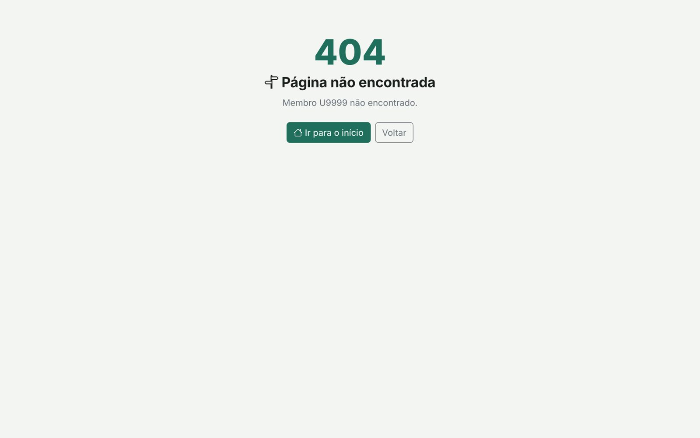
| Desafio | Solução adotada |
|---|---|
Gravar e ler subclasses em JSON (uma SalaPrivada precisa voltar como SalaPrivada) | Anotações @JsonTypeInfo/@JsonSubTypes nas classes abstratas e um ObjectMapper configurado para ler os atributos privados, sem exigir setters públicos (preservando o encapsulamento). |
| Detectar sobreposição de horários | Dois intervalos se sobrepõem quando inicioA < fimB e inicioB < fimA. A regra ficou no método Reserva.sobrepoe(), que também permite reservas "encostadas" (uma termina às 16h e outra começa às 16h). |
| Testar regras que dependem da data atual (24h, 7/30 dias, vencimento) | Os serviços recebem um Clock em vez de chamar LocalDateTime.now(). Nos testes o relógio é fixado numa data (openoffice.relogio-fixo). |
| Cobrar plano, reserva e evento sem duplicar código | Interface Cobravel: o serviço financeiro recebe qualquer item cobrável e gera a cobrança e o pagamento. |
| Não gravar nada se o pagamento falhar | Os dados do pagamento são validados antes de salvar a reserva ou a inscrição. |
| Multa sobre um valor já pago | Ao cancelar, a cobrança original é estornada e uma nova cobrança do tipo "Multa" registra os 50% retidos. Assim o relatório financeiro mostra a origem de cada valor. |
| Google Drive com conta pessoal | Contas de serviço não têm espaço no Drive pessoal. A solução foi OAuth de "aplicativo instalado" com escopo drive.file e token salvo localmente. |
Personalizar: acrescente desafios que a equipe viveu de verdade (ex.: conflitos no Git, configuração do Java/IDE, divisão de tarefas).
| Biblioteca (versão) | Motivo da escolha |
|---|---|
| Spring Boot 3.3.5 (Web, Thymeleaf, Validation) | Servidor web embutido (não exige instalar Tomcat), páginas HTML geradas no servidor e validação de formulários por anotações. |
| Jackson 2.17 (incluso no Spring) | Leitura e gravação de JSON com suporte a herança (tipos polimórficos) e às datas do java.time. |
| spring-security-crypto 6.3 | Apenas o algoritmo BCrypt, para guardar senhas com segurança sem adotar o Spring Security inteiro. |
| iText 8.0.5 (kernel e layout) | Geração dos relatórios em PDF, conforme a recomendação do enunciado. |
| Bootstrap 5.3.3 e Bootstrap Icons 1.11.3 (WebJars) | Layout responsivo e ícones. Por virem empacotados no projeto, funcionam sem internet na apresentação. |
| Chart.js 4.4.1 (WebJar) | Gráficos de barras nos relatórios. |
| Google API Client 2.7.0 e Drive API v3 | Desafio de sincronizar os dados com o Google Drive. |
| JUnit 5, AssertJ e MockMvc | Testes automatizados das regras de negócio e das páginas. |
Preencher pela equipe. O professor avalia a contribuição individual. Descreva com sinceridade o que cada pessoa fez (classes, telas, testes, relatório, apresentação).
| Integrante | Contribuição |
|---|---|
| [Integrante 1] | [ex.: modelo de domínio (Espaco e subclasses, Reserva), ReservaService e testes de reserva] |
| [Integrante 2] | [ex.: planos, pagamentos (Cobravel, Pagamento e subclasses) e FinanceiroService] |
| [Integrante 3] | [ex.: eventos, lista de espera e visitantes] |
| [Integrante 4] | [ex.: telas Thymeleaf, layout e login] |
| [Integrante 5] | [ex.: persistência JSON, relatórios PDF/CSV, Google Drive e README] |
Preencher individualmente. O enunciado pede a experiência de cada aluno. Sugestão de roteiro para cada integrante (3 a 5 linhas):
[Integrante 1]: [texto]
[Integrante 2]: [texto]
[Integrante 3]: [texto]
[Integrante 4]: [texto]
[Integrante 5]: [texto]
O sistema atende aos cinco requisitos obrigatórios do enunciado e às regras específicas de cada módulo (preços, descontos, antecedência, multa, limite de visitantes e prioridade VIP), além do desafio do Google Drive. A separação em camadas e o uso de herança, polimorfismo, encapsulamento e abstração deixaram as regras concentradas nos objetos certos. Isso facilitou os testes: as 43 verificações automatizadas cobrem as regras principais.
Melhorias futuras:
Repositorio<T>.Personalizar: acrescente vídeos, fóruns (Stack Overflow, GitHub Issues) e materiais de aula que a equipe realmente consultou.